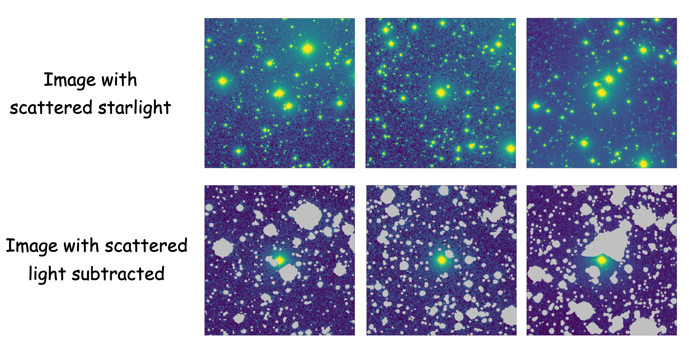
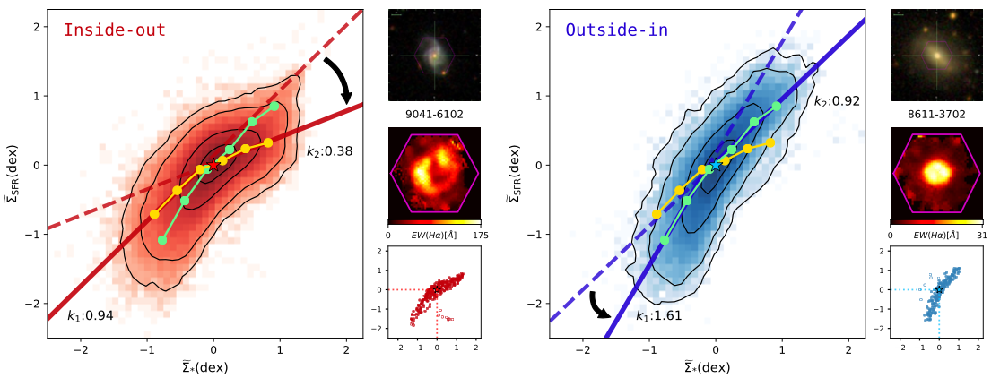

Qing Liu's personal webpage
Controlling Systematics in Low Surface Brightness Imaging Using Dragonfly
Supervisor: Bob Abraham
Unbiased sky background modeling is important to the analysis of deep wide-field images, but it remains a major challenge in low surface brightness astronomy. This is because the sources (e.g., Galactic cirrus) are disentangled with the sky background. I use the all-sky far-infrared/sub-mm data (e.g., Planck) to remove the large-scale time-varying components while preserving the astronomically meaningful Galactic cirrus emission. The goal is to preserve an accurate representation of the background sky, and to provide insights for the improvement of sky modeling for other ongoing or future wide-field imaging surveys, such as those from the upcoming Vera Rubin Telescope (DOI:10.3847/1538-4357/acdee3).

Deep imaging surveys today reach low surface brightness levels by stacking a large number of short exposures to avoid systematics in a long exposure. However, exposures taken at different epochs (or even on the same night) can have subtle per-frame differences due to variations in the zodiacal light, airglow, atmospheric conditions, goodness of flat-fielding, etc. I developed a method to use Gaussian process modeling which uses the spatial covariance of pixels to perform quality control on local background estimates. The aim is to reduce systematics caused by background variations and to increase the precision of photometry on faint extended sources..
Dwarf galaxies are ideal test particles for hierarchical galaxy formation predicted by ΛCDM. The optical Galactic cirrus emission, originated from the starlight scattered by the interstellar dust grains in the Milky Way, is one of the major limiting factor for low surface brightness science such as the detection of faint dwarf satellite galaxies and ultra-diffuse galaxies. I have developed a novel technique incorporating the FIR/sub-mm data from Planck/Herschel, the color information, and the morphology to empirically model the Galactic cirrus and subtract it from the image. This will facilitate the search of interesting objects in the endemic sky area filled with Galactic cirrus by improving the detectability and precision of photometry of low surface brightness galaxies. (work submitted)

Uncertainty in the wide-angle PSF at large angles (tens of arcseconds and beyond) is one of the dominant sources of error in a number of important quantities in observational astronomy. Examples include the stellar mass and shape of galactic halos and the maximum extent of starlight in the disks of nearby galaxies. However, modeling the wide-angle PSF has long been a challenge in astronomical imaging. We present a self-consistent method to model the wide-angle PSF in images, in which cattered light from multiple bright stars is fitted simultaneously with a background model to characterize the extended wing of the PSF using a Bayesian framework operating on pixel-by-pixel level. The method is demonstrated using our software and applied to data from the Dragonfly Telephoto Array (DOI: DOI:10.3847/1538-4357/ac32c6).
Star formation and Quenching in Local and Distant Galaxies
Advisor: Howard Yee
Environmental effects are crucial to the understanding of the evolution of galaxies in dense environments, such as galaxy clusters. Using the large field-of-view of SITELLE, the unique imaging fourier transform spectrograph at CFHT, we obtain 2D spectral information for a large and complete sample of cluster galaxies out to the infall region. We study the spatial offsets between the emission-line regions and stellar continua in emission line galaxies (ELGs) from two z∼0.25 galaxy clusters, Abell 2390 and Abell 2465 where we find a correlation between the offset and the cluster center, particularly for recent infallers. Assuming the offset being a proxy for the velocity vector of a galaxy, as expected from ram pressure stripping (RPS), this excess indicates that RPS occurs most effectively during the first passage of an infalling gas-rich galaxy, leading to the quenching of its star formation. (DOI: 10.3847/1538-4357/abd71e).
Advisor: Prof. Xu Kong & Dr. Enci Wang
We investigate the spatially-resolved star formation in local star-forming galaxies (SFGs) with two assembly modes (Inside-out / Outside-in SF) using data from Integral Field Unit observations of the SDSS MaNGA survey. We study the sub-galactic star-forming main sequence in galaxies with inside-out/outside-in mass assembly mode (DOI: 10.3847/1538-4357/aab3d5).
